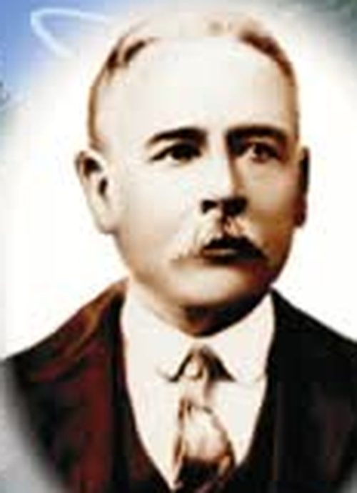

José Antonio Narro Rodríguez
| José Antonio Narro Rodríguez | |
|---|---|
 Retrato | |
| Descripción | Agricultor y filántropo · Donante de la hacienda de Buenavista (UAAAN) · Saltillo, Coahuila |
| Fechas / lugar | 1840 – 1912 |
| Línea familiar | García Narro, García Garza |
José Antonio Narro Rodríguez (1840 – 1912) — Agricultor saltillense (1840–1912) que en su testamento legó su fortuna y la hacienda de Buenavista para fundar una escuela de agricultura; de ahí nació la Universidad Autónoma Agraria Antonio Narro. Segundo albacea: José García Rodríguez, hijo del gobernador Antonio García Carrillo.
José Antonio Narro Rodríguez, conocido como Antonio Narro, nació en Saltillo, Coahuila, el 4 de febrero de 1840, hijo de Antonio Narro García y de María del Carmen Rodríguez. Murió en San Antonio, Texas, el 24 de septiembre de 1912. Soltero y sin hijos, dejó su fortuna para que existiera una escuela de agricultura.
Vida[editar]
Quedó huérfano muy pronto y fue criado por sus hermanos; entre ellos, Trinidad Narro Rodríguez, casada con el acaudalado Enrique Mass (Maas). Hizo la primaria en Saltillo y, con el apoyo de su cuñado, viajó a Europa y a Estados Unidos, donde estudió agricultura y teneduría de libros. A su regreso trabajó en haciendas de la Comarca Lagunera y se dedicó al cultivo del algodón; con su trabajo formó una fortuna que, según su testamento, rebasaba los 70 mil pesos de la época. Fue propietario de la hacienda de Buenavista, al sur de Saltillo, donde vivió los últimos años de su vida, y de la mitad de la hacienda de Icamole, Nuevo León (según Zócalo).
Según la ficha de este archivo fue alcalde de Saltillo; la reseña de Zócalo dice que fue presidente municipal «en varias ocasiones de distintos lugares del Estado». Pendiente: lista de periodos y municipios con acta o fuente oficial.
El testamento y la escuela[editar]
- 1840 Nace en Saltillo (4 de febrero).
- 2 may 1912 Su hermana Trinidad, viuda, dicta su testamento destinando su capital a una institución de Artes y Oficios; muere dos días después. Según la ficha del archivo, destinó bienes al Asilo Narro Mass, la Casa de Oficios y el Hospital Vicente de Paul.
- 10 jul 1912 Antonio dicta su testamento: lega la hacienda de Buenavista, con sus enseres y aperos, y créditos por unos 70 mil pesos, para una escuela de agricultura de beneficencia.
- 24 sep 1912 Muere en San Antonio, Texas; sus restos son sepultados en el Panteón Santiago de Saltillo.
- 1919 Se aprueba fusionar los patrimonios de Antonio y de Trinidad en un solo proyecto escolar (14 de marzo).
- 1923 Se inaugura la Escuela Regional de Agricultura «Antonio Narro» en Buenavista (4 de marzo); el retraso se debió a la Revolución.
- 1938–2006 La escuela pasa al gobierno de Coahuila (1938), se incorpora a la Universidad de Coahuila (1957), logra autonomía como Universidad Autónoma Agraria Antonio Narro (1975) y carácter nacional (2006).
Dejó como albacea a su primo Francisco Narro Acuña, quien gestionó la fundación, y como segundo albacea a José García Rodríguez, hijo del gobernador Antonio García Carrillo y después director del Ateneo Fuente. Ese vínculo es el que une esta ficha con la familia García de Saltillo.
Legado[editar]
Su decisión creó la institución que hoy es la Universidad Autónoma Agraria Antonio Narro (UAAAN), en Saltillo. La biblioteca de la universidad lo presenta como «noble y generoso agricultor».
Notas editoriales. (1) Fecha de muerte: la reseña de Zócalo da el 10 de julio de 1912, que según Vanguardia es la fecha del testamento; este archivo registra el 24 de septiembre de 1912 (Vanguardia y ficha del archivo). (2) No confundir con otro Antonio Narro, hijo de Blas Narro y Juana Acuña, que casó en Villa de Patos el 13 de septiembre de 1872 con Bárbara García (acta del archivo). (3) La relación directa con la línea de Lorenzo García y Juana de la Garza no está probada con acta; su padre se llamaba Antonio Narro García; se agrupa en García Garza por ese apellido García y por su relación con José García Rodríguez, y su filiación queda en investigación. (4) Retrato: imagen del archivo Sefarad MX (recorte de un cartel de la UAAAN, baja resolución).
Fuentes[editar]
- Universidad Autónoma Agraria Antonio Narro — Historia
- UAAAN — Centenario: Antecedentes
- Biblioteca UAAAN — Don José Antonio Narro Rodríguez (1840-1912)
- Vanguardia — El saltillense que lo dio todo para que existiera la UAAAN
- Zócalo — El filántropo que creó la Universidad Agraria «Antonio Narro»
- Ficha del archivo (Sefarad MX, GitHub Pages) — José Antonio Narro Rodríguez
Referencias[editar]
- «José Antonio Narro Rodríguez», Genealogía Sefardí — investigación Sefarad-MX, genealogiasefardi.site/biografias/antonio-narro-rodriguez.